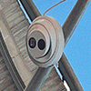
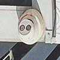
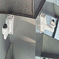

"You had to live—did live,
from habit that became instinct—in the assumption that every sound you made was overheard,
and, except in darkness, every movement scrutinized."
– George Orwell, 1984
"A society of watchers and the watched, a world where everyone is complicit in their own surveillance,
where freedom is traded for the comfort of certainty and predictability."
– Aldous Huxley, Brave New World Revisited
"The whole world is watching. Everyone is watching. We are all being watched.
The eyes of the world are upon us, and we must act accordingly.
We are all complicit, for surveillance is not just an act of power but of fear."
– George Orwell, 1984
"And the people in the compound watched the city dwellers on their screens,
feeding on their fear, their envy, their desperation. It was a kind of voyeurism,
detached and clinical, but addictive all the same."
– Margaret Atwood, Oryx and Crake
"There were signs and glimpses, things watched and over-watched.
The house was under constant surveillance. What the cameras did not pick up, people did.
They worked in pairs, moving into each other’s territory. When you least expected it,
when you had not yet switched on a light, you would feel the cool sifting of air behind you,
someone leaning slightly, taking notes, observing your movements."
– Don DeLillo,White Noise
"The Panopticon is a machine for dissociating the see/being seen dyad:
in the peripheric ring, one is totally seen, without ever seeing; in the central tower,
one sees everything without ever being seen."
– Michel Foucault, Discipline and Punish
"The most important thing was not the information itself, but the fact that it was being recorded."
– Margaret Atwood, The Handmaid's Tale
"The Eyes of God run all over the earth. Because they aren't linked up with any device,
you can't tell where they are, whether they're hidden in a wall or standing right next to you.
They could be anywhere. The Eyes, like a swarm of bees."
– Margaret Atwood, The Handmaid's Tale
"The telescreen received and transmitted simultaneously.
Any sound that Winston made, above the level of a very low whisper,
would be picked up by it; moreover,
so long as he remained within the field of vision which the metal plaque commanded,
he could be seen as well as heard.
There was of course no way of knowing whether you were being watched at any given moment.
How often, or on what system,
the Thought Police plugged in on any individual wire was guesswork."
– George Orwell, 1984
"Surveillance is a game of patience, of shadows and whispers.
It’s about knowing when to listen and when to look away.
And it’s about trust—trusting no one, not even yourself."
– John le Carré, Tinker, Tailor, Soldier, Spy
"There were eyes everywhere, and none of them human. The AI watched him,
dissected him, knew him better than he knew himself. Surveillance had gone beyond mere observation;
it had become a form of control, a way to manipulate the very essence of identity."
– William Gibson, Neuromancer
"Surveillance is not just a matter of the state or the police;
it is a matter of the mind. The guilty mind creates its own watchmen,
its own prison. There is no escape from the gaze of conscience."
– Fyodor Dostoevsky, Crime and Punishment